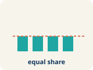
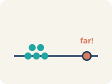

Unit 8 · Standard 6.SP.5d
Appropriate Measures
Key Vocabulary Level 1 support
Picture first, then the word, then a plain-language meaning. Say each word out loud.

Mean of 10, 20, 30 = (10+20+30) ÷ 3 = 20
Mean
The average. Add all the numbers, then divide by how many there are.

Data: 5, 8, 12, 15, 20 → median is 12 (the 3rd of 5 values)
Median
The middle number when you put them in order.

Data: 12, 14, 13, 15, 45 → 45 is far from the cluster, so it is an outlier
Outlier
A number that is much bigger or smaller than the rest.
Scores: 5, 6, 7, 8, 8, 35 → most scores are low, but 35 creates a tail to the right (skewed right)
Skewed
When most data sits on one side with a tail on the other.

Symmetric = even on both sides. Skewed = bunched on one side with a tail
Data distribution
How the data looks: where it sits and how spread out it is.

88, 90, 89, 91 (low variability) vs. 50, 70, 95, 100 (high variability)
Variability
How spread out the numbers are.
Key Ideas & Notes
What we're learning today
I can choose the best measure of center for a data set based on its shape.
Notice
The league is creating awards for the season.
Key idea
I can choose the best measure of center for a data set based on its shape.
Words I'll use
🤔 Think About It
- How does the 58-point game compare to the other scores?
- What is the mean? What is the median?
- Which measure is closer to what this player usually scores?
See the notes in action: watch one worked all the way through, then try the next with the same steps.
Follow each step as your teacher solves it.
Problem: A gymnast's scores are: 8.5, 8.8, 8.7, 8.6, 8.9. There are no outliers. Which measure best represents a typical score?
- Mean
- Median
- Neither — the data is too small
- Both are equally bad
- Step 1 The data is symmetric with no outliers, so the mean (8.7) best represents the typical score.
✅ Answer: A. Mean
Solve this one with your class using the same steps.
Problem: A runner's mile times are: 7:10, 7:15, 7:12, 7:20, 12:00. The 12:00 was due to a cramp. Which measure best represents a typical mile?
- Median — the outlier 12:00 pulls the mean too high
- Mean — it uses all the data
- Mode — it shows the most common time
- Neither measure works
- Step 1
- Step 2
Answer:
Now try one on your own. Show every step.
Problem: Match each data description with the best measure of center.
Turn & Talk — Discussion Points Level 1 support Level 2
Talk with a partner about each prompt. If you need help getting started, use the Level 1 sentence stems. Ready for more? Try the Level 2 question.
A top scorer's points were 22, 24, 20, 25, 23, 21, 58. The mean is 27.6 but the median is 23. Which should the league report as the 'typical' game, and why?
Start here: An outlier can pull the mean away from what is typical, making the median a better choice.
💡 Need a hint?
Try starting with the word "mean" or "median". Re-read the question and underline what it is asking you to compare or find. Use one number or word from the problem as your evidence.
Sentence starters (optional)
The league should report the ___ because ___.La liga debería reportar la ___ porque ___.
The 58-point game is an ___ that affects the mean.El juego de 58 puntos es un ___ que afecta la media.
Listen for: Students choose the median (23) and identify 58 as an outlier that pulls the mean up to 27.6, making it unrepresentative.
Justify: by how much does removing the 58-point game change the mean? What does that show about outliers?
- Without the 58, the mean drops to about ___ because ___.
- This shows the median is ___ to outliers while the mean is ___.
As you sort scenarios into 'Use Mean' or 'Use Median,' what clue tells you a data set needs the median instead of the mean?
Start here: Data with an outlier or a skewed shape is better summarized by the median.
💡 Need a hint?
Try starting with the word "mean" or "median". Re-read the question and underline what it is asking you to compare or find. Use one number or word from the problem as your evidence.
Sentence starters (optional)
I use the median when the data has ___.Uso la mediana cuando los datos tienen ___.
I use the mean when the data is ___.Uso la media cuando los datos son ___.
Listen for: A strong answer says the presence of an outlier or skew signals the median, while symmetric data with no outliers fits the mean.
Compare: give one sports example where the mean is the better choice and one where the median is. Justify each.
- The mean is better for ___ because ___.
- The median is better for ___ because ___.
A reporter writes 'the average playoff ticket is $85,' but prices are $45, $50, $48, $52, $55, $260. Is $85 a fair 'typical' price? What measure should the reporter use?
Start here: When one extreme value skews the data, the median represents the typical case more fairly.
💡 Need a hint?
Try starting with the word "mean" or "median". Re-read the question and underline what it is asking you to compare or find. Use one number or word from the problem as your evidence.
Sentence starters (optional)
$85 is / is not fair because the $260 ticket ___.$85 es / no es justo porque el boleto de $260 ___.
The reporter should use the ___ because ___.El reportero debería usar la ___ porque ___.
Listen for: Students explain $85 is misleading because the $260 courtside seat skews the mean upward, and the median (~$51) better reflects a typical ticket.
Critique: could the reporter be using the mean ON PURPOSE to make tickets sound pricier? Argue whether that is honest.
- Using the mean here could be misleading because ___.
- An honest report would show ___ so readers understand ___.
For the data set 15, 18, 16, 17, 15, 72, which measure of center best represents the data, and why?
Start here: An extreme value makes the median the more representative measure of center.
💡 Need a hint?
Try starting with the word "mean" or "median". Re-read the question and underline what it is asking you to compare or find. Use one number or word from the problem as your evidence.
Sentence starters (optional)
The ___ best represents the data because ___.La ___ representa mejor los datos porque ___.
The value ___ is an outlier that distorts the mean.El valor ___ es un valor atípico que distorsiona la media.
Listen for: Students choose the median (~16.5), identify 72 as the outlier, and explain it would inflate the mean.
Generalize: state a rule for deciding between the mean and the median for any data set.
- Choose the median when the data has ___.
- Choose the mean when ___, because ___.
Interactive Unit Projects
Apply your math skills in these interactive dashboard games and coding labs.
Unit 8 Project — Statistics in Action
Capstone: choose the measure of center and spread that best fits your data's distribution.
Distribution Detective
Decide which measure of center best describes a data set based on its shape (6.SP.5d).
Data Studio Master
Compare mean, median, and spread to pick the most appropriate summary measure.
Write About the Math The Writing Revolution
I can explain my choice using the words mean, median, outlier, and skewed.
1. Kernel Sentence subject + verb
Model: Mean is the average. Add all the numbers, then divide by how many there are.Media es el promedio. Suma todos los números y divide entre cuántos hay.
Write a kernel sentence about mean. Use a subject and a verb.Escribe una oración base sobre media. Usa un sujeto y un verbo.
2. Sentence Expansion because · but · so
Kernel: Mean matters in mathMedia importa en matemáticas
Expand the kernel three ways. Add a reason, a contrast, and a result.
Mean matters in math because ___.Media importa en matemáticas porque ___.
Mean matters in math, but ___.Media importa en matemáticas, pero ___.
Mean matters in math, so ___.Media importa en matemáticas, entonces ___.
3. Sentence Types 4 ways to write a math idea
Tell one true fact about mean.Di un hecho verdadero sobre mean.
Mean ___.
Ask a question about mean.Haz una pregunta sobre mean.
How does ___ ?¿Cómo ___ ?
Show excitement about mean.Muestra entusiasmo sobre mean.
Wow, ___ !¡Guau, ___ !
Tell a partner what to do with mean.Dile a un compañero qué hacer con mean.
First, ___ .Primero, ___ .
4. Explain Your Reasoning use a sentence starter
The league should report the ___ because ___.La liga debería reportar la ___ porque ___.
The 58-point game is an ___ that affects the mean.El juego de 58 puntos es un ___ que afecta la media.
I use the median when the data has ___.Uso la mediana cuando los datos tienen ___.
Try It
Solve on your own. Check the answer key when you are done.
1. Test scores are 80, 82, 85, 88, 12. Why is the median better than the mean here?
- The score of 12 is an outlier that pulls the mean down
- The mean is always wrong
- There are too few scores
- The data has no median
2. For data with no outliers and a symmetric shape, which center is appropriate?
- Mean
- Only mode
- Only range
- Neither mean nor median
Stretch Your Thinking Level 2 enrichment
Challenge task — explain your reasoning in full sentences.
A local newspaper reports that the average home price in a neighborhood is $450,000. The actual prices are: $180K, $200K, $190K, $210K, $195K, $1,725K. Is the reporter's claim misleading? Calculate the mean and median and explain which better represents a 'typical' home price.
Sentence starter: Mean = ___. Median = ___. The reporter's claim is ___ because the outlier ($1,725K) pulls the mean ___. The ___ (about $___) better represents a typical home price because ___.
Reflect — Exit Ticket
Data set: 15, 18, 16, 17, 15, 72. Which measure of center best represents the data?
- Median, because 72 is an outlier
- Mean, because it uses all values
- Mean, because it is always best
- Neither works for this data
Answer Key & Teacher Guide
- We Try (notes): A. Median — the outlier 12:00 pulls the mean too high — The 12:00 is an outlier that pulls the mean up. The median (7:15) better represents the runner's typical time.
- Try It 1: A. The score of 12 is an outlier that pulls the mean down — The outlier 12 lowers the mean a lot, but the median stays near the typical scores.
- Try It 2: A. Mean — With no outliers, the mean represents the data well.
- Exit Ticket: A. Median, because 72 is an outlier — The value 72 is an outlier. The mean (25.5) is pulled high by 72 and doesn't represent the typical values. The median (16.5) is a better measure of center.
Writing (TWR) — what to look for
- Kernel sentence: A complete sentence needs a subject and a verb. Example: Mean is the average. Add all the numbers, then divide by how many there are.
- Expansion: because gives a reason, but shows a contrast or exception, so shows a result. Answers vary; each must keep the kernel idea and add the correct kind of detail.
- Sentence types: Statement ends with a period, question with "?", exclamation with "!", and a command starts with an action verb (a "bossy" verb).